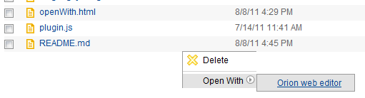

| orion.navigate.openWith | ||
|---|---|---|
|
|
|
|
| orion.navigate.command | orion.core.contenttype | |
The orion.navigate.openWith service is used to associate a registered editor (see orion.edit.editor) with a registered content type (see orion.core.contenttype). Once this association has been made, the editor will be presented as a choice in the "Open With" menu beside files of that content type.
By default, the Orion client UI provides an editor with ID orion.editor, to be used for editing source code. You can refer to this editor ID when you want to associate a new content type with the Orion Editor.
None. This service is purely declarative.
Implementations of orion.navigate.openWith must define the following attributes:
String The ID of the editor we want to associate. This must match exactly the editor's ID as given in
orion.edit.editor.
String[] An array of one or more content type IDs that will be associated with the editor.Here is a sample plug-in that associates the Orion Editor with the "text/markdown" content type. This example assumes that the "text/markdown" type has been previously registered with the
orion.core.contenttype service.
var provider = new eclipse.PluginProvider();
provider.registerServiceProvider("orion.navigate.openWith", {},
{ id: "orion.editor",
contentType: "text/markdown"
});
provider.connect();
When this plug-in is installed, the user will see the Orion Editor as an available target in the Open With Navigator menu beside files of the Markdown content type:

|
|

|
|
| orion.navigate.command | orion.core.contenttype |